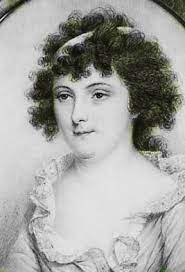

| Angelica Schuyler was born on February 20, 1756, to Phillip Schuyler and Catherine Van Rensselaer in Albany, New York. Her father was a Revolutionary War General and her mother came from a wealthy established family. Thus, Angelica grew up to become a New York socialite. | Angelica Schuyler | |
| Elizabeth was born in Albany, New York, the second daughter of Continental Army General Philip Schuyler, a Revolutionary War general, and his wife, Catherine Van Rensselaer. | Elizabeth Schuyler | |
|  | Margarita "Peggy" Schuyler Van Rensselaer (September 19, 1758 – March 14, 1801) was the third daughter of Continental Army General Philip Schuyler. | Peggy Schuyler |